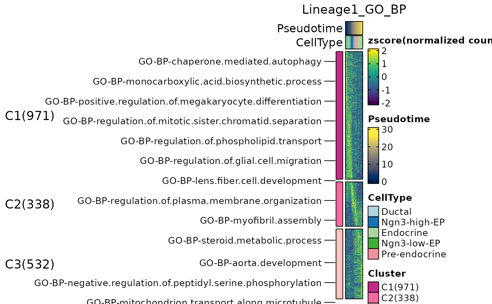

This function calculates gene-set scores from the specified database (db) for each lineage using the specified scoring method (score_method).
It then treats these scores as expression values and uses them as input to the RunDynamicFeatures function to identify dynamically enriched terms along the lineage.
Usage
RunDynamicEnrichment(
srt,
lineages,
score_method = "AUCell",
layer = "data",
assay = NULL,
min_expcells = 20,
r.sq = 0.2,
dev.expl = 0.2,
padjust = 0.05,
IDtype = "symbol",
species = "Homo_sapiens",
db = "GO_BP",
db_update = FALSE,
db_version = "latest",
convert_species = TRUE,
Ensembl_version = NULL,
mirror = NULL,
features = NULL,
TERM2GENE = NULL,
TERM2NAME = NULL,
minGSSize = 10,
maxGSSize = 500,
backend = c("cpp", "r"),
cpp_strategy = c("sparse", "topk", "full"),
cores = 1,
verbose = TRUE,
seed = 11,
...
)Arguments
- srt
A
Seuratobject orSummarizedExperimentobject containing the results of differential expression analysis (RunDEtest()). If specified, the genes and groups will be extracted from the object automatically. If not specified, thegeneIDandgeneID_groupsarguments must be provided.- lineages
A character vector specifying the lineage names for which dynamic features should be calculated.
- score_method
The method to use for scoring. Can be
"Seurat","AUCell","UCell","GSVA","ssGSEA","zscore","PLAGE", or"VISION". Multiple methods can be supplied at once; each method will be written to a method-suffixed assay before dynamic-feature fitting. Default is"AUCell".- layer
Which layer to use. Default is
"counts".- assay
Which assay to use. If
NULL, the default assay of the Seurat object will be used. When the object also containsChromatinAssay, the default assay and additionalChromatinAssaywill be preprocessed sequentially.- min_expcells
The minimum number of expected cells. Default is
20.- r.sq
The R-squared threshold. Default is
0.2.- dev.expl
The deviance explained threshold. Default is
0.2.- padjust
The p-value adjustment threshold. Default is
0.05.- IDtype
A character vector specifying the type of gene IDs in the
srtobject orgeneIDargument. This argument is used to convert the gene IDs to a different type ifIDtypeis different fromresult_IDtype.- species
A character vector specifying the species for which the gene annotation databases should be prepared. Can be
"Homo_sapiens"or"Mus_musculus".- db
A character vector specifying the annotation sources to be included in the gene annotation databases. Can be one or more of
"GO", "GO_BP", "GO_CC", "GO_MF", "KEGG", "WikiPathway", "Reactome", "CORUM", "MP", "DO", "HPO", "PFAM", "CSPA", "Surfaceome", "SPRomeDB", "VerSeDa", "TFLink", "hTFtarget", "TRRUST", "JASPAR", "ENCODE", "MSigDB", "CellTalk", "CellChat", "Chromosome", "GeneType", "Enzyme", "TF", "CytoTRACE2". MSigDB subcollections can be requested as"MSigDB_<collection>", such as"MSigDB_H"for human Hallmark and"MSigDB_MH"for mouse Hallmark. Note:"CytoTRACE2"is species-independent and downloads pre-trained model data required by RunCytoTRACE.- db_update
Whether the gene annotation databases should be forcefully updated. If set to FALSE, the function will attempt to load the cached databases instead. Default is
FALSE.- db_version
A character vector specifying the version of the gene annotation databases to be retrieved. Default is
"latest".- convert_species
Whether to use a species-converted database when the annotation is missing for the specified species. Default is
TRUE.- Ensembl_version
An integer specifying the Ensembl version. Default is
NULL. IfNULL, the latest version will be used.- mirror
Specify an Ensembl mirror to connect to. The valid options here are
"www","uswest","useast","asia".- features
A named list of feature lists for custom enrichment gene sets. If provided, it takes precedence over
TERM2GENEanddb.- TERM2GENE
A data frame specifying the gene-term mapping for a custom database. The first column should contain the term IDs, and the second column should contain the gene IDs.
- TERM2NAME
A data frame specifying the term-name mapping for a custom database. The first column should contain the term IDs, and the second column should contain the corresponding term names.
- minGSSize
The minimum size of a gene set to be considered in the enrichment analysis.
- maxGSSize
The maximum size of a gene set to be considered in the enrichment analysis.
- backend
Enrichment backend.
"cpp"is the default and uses a fast native hypergeometric ORA implementation and returns the enrichment table withoutenrichResultobjects."r"usesclusterProfiler::enricher()and returnsenrichResultobjects inresults.GO_simplify = TRUEcurrently uses the R backend.- cpp_strategy
AUCell scoring strategy used when
backend = "cpp"."sparse"ranks non-zero genes and approximates zero ties without densifying the expression matrix."aucell"calls the officialAUCell::AUCell_buildRankings()andAUCell::AUCell_calcAUC()path for exact consistency with the R backend,"topk"ranks only genes that can contribute to AUCell AUC, and"full"ranks all genes.- cores
The number of cores to use for parallelization with foreach::foreach. Default is
1.- verbose
Whether to print the message. Default is
TRUE.- seed
Random seed for reproducibility. Default is
11.- ...
Passed to other functions.
Examples
data(pancreas_sub)
pancreas_sub <- standard_scop(pancreas_sub)
#> ℹ [2026-06-24 18:48:58] Start standard processing workflow...
#> ℹ [2026-06-24 18:48:59] Checking a list of <Seurat>...
#> ! [2026-06-24 18:48:59] Data 1/1 of the `srt_list` is "unknown"
#> ℹ [2026-06-24 18:48:59] Perform `NormalizeData()` with `normalization.method = 'LogNormalize'` on 1/1 of `srt_list`...
#> ℹ [2026-06-24 18:48:59] Perform `FindVariableFeatures()` on 1/1 of `srt_list`...
#> ℹ [2026-06-24 18:48:59] Use the separate HVF from `srt_list`
#> ℹ [2026-06-24 18:48:59] Number of available HVF: 2000
#> ℹ [2026-06-24 18:49:00] Finished check
#> ℹ [2026-06-24 18:49:00] Perform `ScaleData()`
#> ℹ [2026-06-24 18:49:00] Perform pca linear dimension reduction
#> ℹ [2026-06-24 18:49:00] Use stored estimated dimensions 1:23 for Standardpca
#> ℹ [2026-06-24 18:49:00] Perform `Seurat::FindClusters()` with `cluster_algorithm = 'louvain'` and `cluster_resolution = 0.6`
#> ℹ [2026-06-24 18:49:00] Reorder clusters...
#> ℹ [2026-06-24 18:49:01] Skip `log1p()` because `layer = data` is not "counts"
#> ℹ [2026-06-24 18:49:01] Perform umap nonlinear dimension reduction
#> ✔ [2026-06-24 18:49:08] Standard processing workflow completed
pancreas_sub <- RunSlingshot(
pancreas_sub,
group.by = "CellType",
reduction = "UMAP"
)
#> Warning: Removed 17 rows containing missing values or values outside the scale range
#> (`geom_path()`).
#> Warning: Removed 17 rows containing missing values or values outside the scale range
#> (`geom_path()`).
 pancreas_sub <- RunDynamicFeatures(
pancreas_sub,
lineages = "Lineage1",
fit_method = "pretsa",
n_candidates = 200
)
#> ℹ [2026-06-24 18:49:08] Start find dynamic features
#> ℹ [2026-06-24 18:49:09] Data type is raw counts
#> ℹ [2026-06-24 18:49:09] Number of candidate features (union): 200
#> ℹ [2026-06-24 18:49:10] Data type is raw counts
#> ℹ [2026-06-24 18:49:10] Calculating dynamic features for "Lineage1"...
#> ✔ [2026-06-24 18:49:10] Find dynamic features done
ht1 <- DynamicHeatmap(
pancreas_sub,
lineages = "Lineage1",
cell_annotation = "CellType",
n_split = 3
)
#> ℹ [2026-06-24 18:49:10] [1] 134 features from Lineage1 passed the threshold (exp_ncells>[1] 20 & r.sq>[1] 0.2 & dev.expl>[1] 0.2 & padjust<[1] 0.05):
#> ℹ Ins1,Ins2,Nnat,Iapp,Lrpprc,Npy,Chgb,Slc38a5,2810417H13Rik,Rbp4...
#> ℹ [2026-06-24 18:49:11]
#> ℹ The size of the heatmap is fixed because certain elements are not scalable.
#> ℹ The width and height of the heatmap are determined by the size of the current viewport.
#> ℹ If you want to have more control over the size, you can manually set the parameters 'width' and 'height'.
pancreas_sub <- RunDynamicFeatures(
pancreas_sub,
lineages = "Lineage1",
fit_method = "pretsa",
n_candidates = 200
)
#> ℹ [2026-06-24 18:49:08] Start find dynamic features
#> ℹ [2026-06-24 18:49:09] Data type is raw counts
#> ℹ [2026-06-24 18:49:09] Number of candidate features (union): 200
#> ℹ [2026-06-24 18:49:10] Data type is raw counts
#> ℹ [2026-06-24 18:49:10] Calculating dynamic features for "Lineage1"...
#> ✔ [2026-06-24 18:49:10] Find dynamic features done
ht1 <- DynamicHeatmap(
pancreas_sub,
lineages = "Lineage1",
cell_annotation = "CellType",
n_split = 3
)
#> ℹ [2026-06-24 18:49:10] [1] 134 features from Lineage1 passed the threshold (exp_ncells>[1] 20 & r.sq>[1] 0.2 & dev.expl>[1] 0.2 & padjust<[1] 0.05):
#> ℹ Ins1,Ins2,Nnat,Iapp,Lrpprc,Npy,Chgb,Slc38a5,2810417H13Rik,Rbp4...
#> ℹ [2026-06-24 18:49:11]
#> ℹ The size of the heatmap is fixed because certain elements are not scalable.
#> ℹ The width and height of the heatmap are determined by the size of the current viewport.
#> ℹ If you want to have more control over the size, you can manually set the parameters 'width' and 'height'.
 pancreas_sub <- RunDynamicEnrichment(
pancreas_sub,
lineages = "Lineage1",
score_method = "AUCell",
db = "GO_BP",
species = "Mus_musculus"
)
#> ℹ [2026-06-24 18:49:12] Species: "Mus_musculus"
#> ℹ [2026-06-24 18:49:12] Loading cached: GO_BP version: 3.23.0 nterm:14957 created: 2026-06-24 17:52:31
#> ℹ [2026-06-24 18:49:15] Start cell scoring
#> ℹ [2026-06-24 18:49:16] Data type is log-normalized
#> ℹ [2026-06-24 18:49:17] Number of feature lists to be scored: 2729
#> Warning: Feature names cannot have underscores ('_'), replacing with dashes ('-')
#> Warning: Feature names cannot have underscores ('_'), replacing with dashes ('-')
#> ✔ [2026-06-24 18:49:24] Cell scoring completed
#> ℹ [2026-06-24 18:49:24] Start find dynamic features
#> ℹ [2026-06-24 18:49:25] Data type is log-normalized
#> ℹ [2026-06-24 18:49:25] Number of candidate features (union): 2729
#> ℹ [2026-06-24 18:49:25] Data type is log-normalized
#> ℹ [2026-06-24 18:49:25] Calculating dynamic features for "Lineage1"...
#> ℹ [2026-06-24 18:49:25] Using 1 core
#> ⠙ [2026-06-24 18:49:25] Running for GO-BP-2..deoxyribonucleotide.biosynthetic.p…
#> ⠹ [2026-06-24 18:49:25] Running for GO-BP-appendage.development [149/2729] …
#> ⠸ [2026-06-24 18:49:25] Running for GO-BP-cellular.response.to.fatty.acid [327/…
#> ⠼ [2026-06-24 18:49:25] Running for GO-BP-ear.development [499/2729] ■ …
#> ⠴ [2026-06-24 18:49:25] Running for GO-BP-glycolytic.process [670/2729] ■■ …
#> ⠦ [2026-06-24 18:49:25] Running for GO-BP-lymphocyte.differentiation [850/2729]…
#> ⠧ [2026-06-24 18:49:25] Running for GO-BP-muscle.organ.morphogenesis [1028/2729…
#> ⠇ [2026-06-24 18:49:25] Running for GO-BP-negative.regulation.of.muscle.cell.di…
#> ⠏ [2026-06-24 18:49:25] Running for GO-BP-oogenesis [1393/2729] ■■■■■ 51%…
#> ⠋ [2026-06-24 18:49:25] Running for GO-BP-positive.regulation.of.exocytosis [15…
#> ⠙ [2026-06-24 18:49:25] Running for GO-BP-postsynapse.organization [1760/2729] …
#> ⠹ [2026-06-24 18:49:25] Running for GO-BP-regulation.of.amyloid.beta.clearance …
#> ⠸ [2026-06-24 18:49:25] Running for GO-BP-regulation.of.interleukin.6.productio…
#> ⠼ [2026-06-24 18:49:25] Running for GO-BP-regulation.of.receptor.internalizatio…
#> ⠴ [2026-06-24 18:49:25] Running for GO-BP-response.to.muramyl.dipeptide [2472/2…
#> ⠦ [2026-06-24 18:49:25] Running for GO-BP-trachea.development [2652/2729] ■■■■■…
#> ✔ [2026-06-24 18:49:25] Completed 2729 tasks in 46s
#>
#> ℹ [2026-06-24 18:49:25] Building results
#> ✔ [2026-06-24 18:50:11] Find dynamic features done
#> ✔ [2026-06-24 18:50:11] Dynamic enrichment analysis completed
ht2 <- DynamicHeatmap(
pancreas_sub,
assay = "GO_BP",
lineages = "Lineage1_GO_BP",
cell_annotation = "CellType",
n_split = 3,
split_method = "kmeans-peaktime"
)
#> ℹ [2026-06-24 18:50:11] [1] 1893 features from Lineage1_GO_BP passed the threshold (exp_ncells>[1] 20 & r.sq>[1] 0.2 & dev.expl>[1] 0.2 & padjust<[1] 0.05):
#> ℹ GO-BP-2..deoxyribonucleotide.biosynthetic.process,GO-BP-2..deoxyribonucleotide.metabolic.process,GO-BP-ADP.catabolic.process,GO-BP-ADP.metabolic.process,GO-BP-ATP.metabolic.process,GO-BP-ATP.synthesis.coupled.electron.transport,GO-BP-B.cell.activation,GO-BP-B.cell.proliferation,GO-BP-CENP.A.containing.chromatin.assembly,GO-BP-D.glucose.import.across.plasma.membrane...
#> ! [2026-06-24 18:50:12] The values in the 'counts' layer are non-integer. Set the library size to 1.
#> ℹ [2026-06-24 18:50:13]
#> ℹ The size of the heatmap is fixed because certain elements are not scalable.
#> ℹ The width and height of the heatmap are determined by the size of the current viewport.
#> ℹ If you want to have more control over the size, you can manually set the parameters 'width' and 'height'.
pancreas_sub <- RunDynamicEnrichment(
pancreas_sub,
lineages = "Lineage1",
score_method = "AUCell",
db = "GO_BP",
species = "Mus_musculus"
)
#> ℹ [2026-06-24 18:49:12] Species: "Mus_musculus"
#> ℹ [2026-06-24 18:49:12] Loading cached: GO_BP version: 3.23.0 nterm:14957 created: 2026-06-24 17:52:31
#> ℹ [2026-06-24 18:49:15] Start cell scoring
#> ℹ [2026-06-24 18:49:16] Data type is log-normalized
#> ℹ [2026-06-24 18:49:17] Number of feature lists to be scored: 2729
#> Warning: Feature names cannot have underscores ('_'), replacing with dashes ('-')
#> Warning: Feature names cannot have underscores ('_'), replacing with dashes ('-')
#> ✔ [2026-06-24 18:49:24] Cell scoring completed
#> ℹ [2026-06-24 18:49:24] Start find dynamic features
#> ℹ [2026-06-24 18:49:25] Data type is log-normalized
#> ℹ [2026-06-24 18:49:25] Number of candidate features (union): 2729
#> ℹ [2026-06-24 18:49:25] Data type is log-normalized
#> ℹ [2026-06-24 18:49:25] Calculating dynamic features for "Lineage1"...
#> ℹ [2026-06-24 18:49:25] Using 1 core
#> ⠙ [2026-06-24 18:49:25] Running for GO-BP-2..deoxyribonucleotide.biosynthetic.p…
#> ⠹ [2026-06-24 18:49:25] Running for GO-BP-appendage.development [149/2729] …
#> ⠸ [2026-06-24 18:49:25] Running for GO-BP-cellular.response.to.fatty.acid [327/…
#> ⠼ [2026-06-24 18:49:25] Running for GO-BP-ear.development [499/2729] ■ …
#> ⠴ [2026-06-24 18:49:25] Running for GO-BP-glycolytic.process [670/2729] ■■ …
#> ⠦ [2026-06-24 18:49:25] Running for GO-BP-lymphocyte.differentiation [850/2729]…
#> ⠧ [2026-06-24 18:49:25] Running for GO-BP-muscle.organ.morphogenesis [1028/2729…
#> ⠇ [2026-06-24 18:49:25] Running for GO-BP-negative.regulation.of.muscle.cell.di…
#> ⠏ [2026-06-24 18:49:25] Running for GO-BP-oogenesis [1393/2729] ■■■■■ 51%…
#> ⠋ [2026-06-24 18:49:25] Running for GO-BP-positive.regulation.of.exocytosis [15…
#> ⠙ [2026-06-24 18:49:25] Running for GO-BP-postsynapse.organization [1760/2729] …
#> ⠹ [2026-06-24 18:49:25] Running for GO-BP-regulation.of.amyloid.beta.clearance …
#> ⠸ [2026-06-24 18:49:25] Running for GO-BP-regulation.of.interleukin.6.productio…
#> ⠼ [2026-06-24 18:49:25] Running for GO-BP-regulation.of.receptor.internalizatio…
#> ⠴ [2026-06-24 18:49:25] Running for GO-BP-response.to.muramyl.dipeptide [2472/2…
#> ⠦ [2026-06-24 18:49:25] Running for GO-BP-trachea.development [2652/2729] ■■■■■…
#> ✔ [2026-06-24 18:49:25] Completed 2729 tasks in 46s
#>
#> ℹ [2026-06-24 18:49:25] Building results
#> ✔ [2026-06-24 18:50:11] Find dynamic features done
#> ✔ [2026-06-24 18:50:11] Dynamic enrichment analysis completed
ht2 <- DynamicHeatmap(
pancreas_sub,
assay = "GO_BP",
lineages = "Lineage1_GO_BP",
cell_annotation = "CellType",
n_split = 3,
split_method = "kmeans-peaktime"
)
#> ℹ [2026-06-24 18:50:11] [1] 1893 features from Lineage1_GO_BP passed the threshold (exp_ncells>[1] 20 & r.sq>[1] 0.2 & dev.expl>[1] 0.2 & padjust<[1] 0.05):
#> ℹ GO-BP-2..deoxyribonucleotide.biosynthetic.process,GO-BP-2..deoxyribonucleotide.metabolic.process,GO-BP-ADP.catabolic.process,GO-BP-ADP.metabolic.process,GO-BP-ATP.metabolic.process,GO-BP-ATP.synthesis.coupled.electron.transport,GO-BP-B.cell.activation,GO-BP-B.cell.proliferation,GO-BP-CENP.A.containing.chromatin.assembly,GO-BP-D.glucose.import.across.plasma.membrane...
#> ! [2026-06-24 18:50:12] The values in the 'counts' layer are non-integer. Set the library size to 1.
#> ℹ [2026-06-24 18:50:13]
#> ℹ The size of the heatmap is fixed because certain elements are not scalable.
#> ℹ The width and height of the heatmap are determined by the size of the current viewport.
#> ℹ If you want to have more control over the size, you can manually set the parameters 'width' and 'height'.
